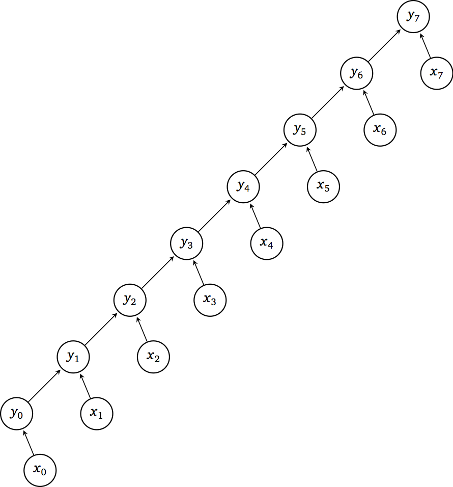
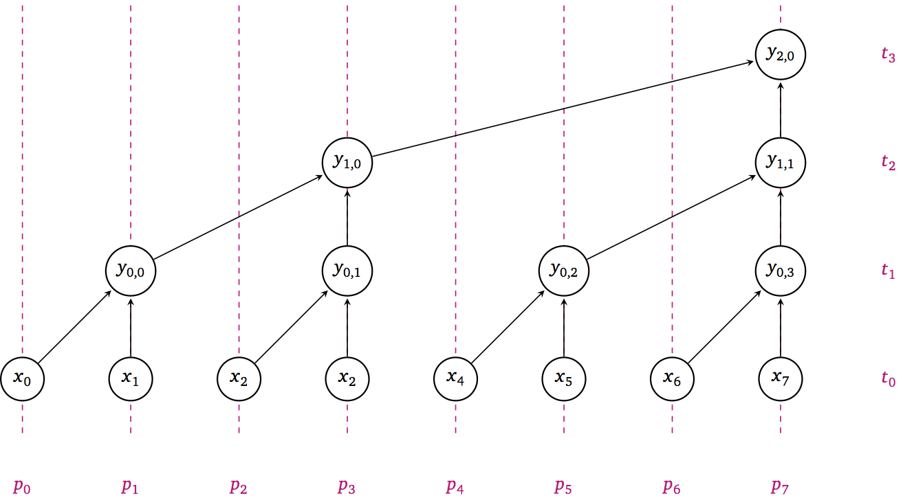
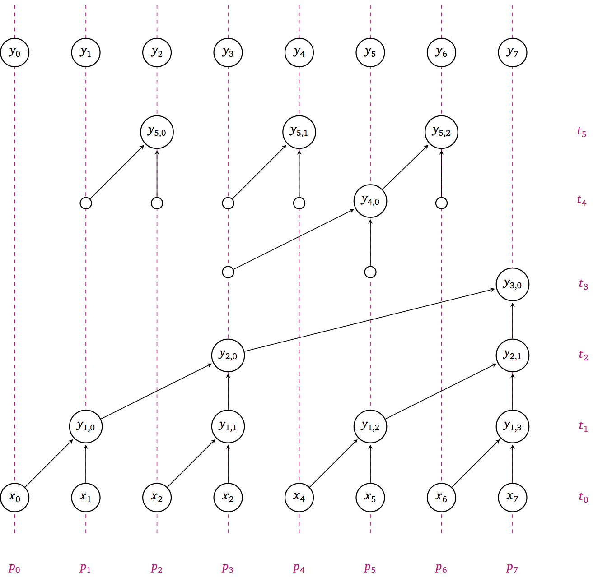
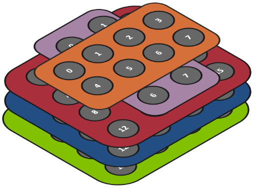
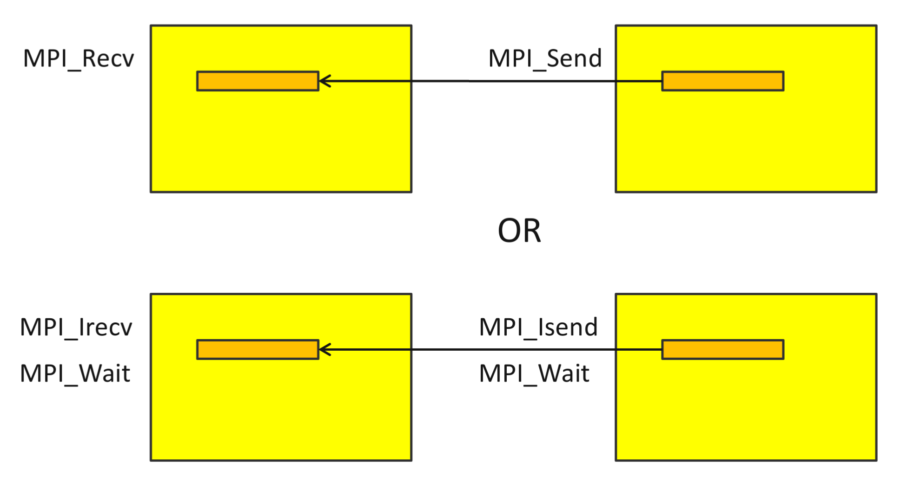
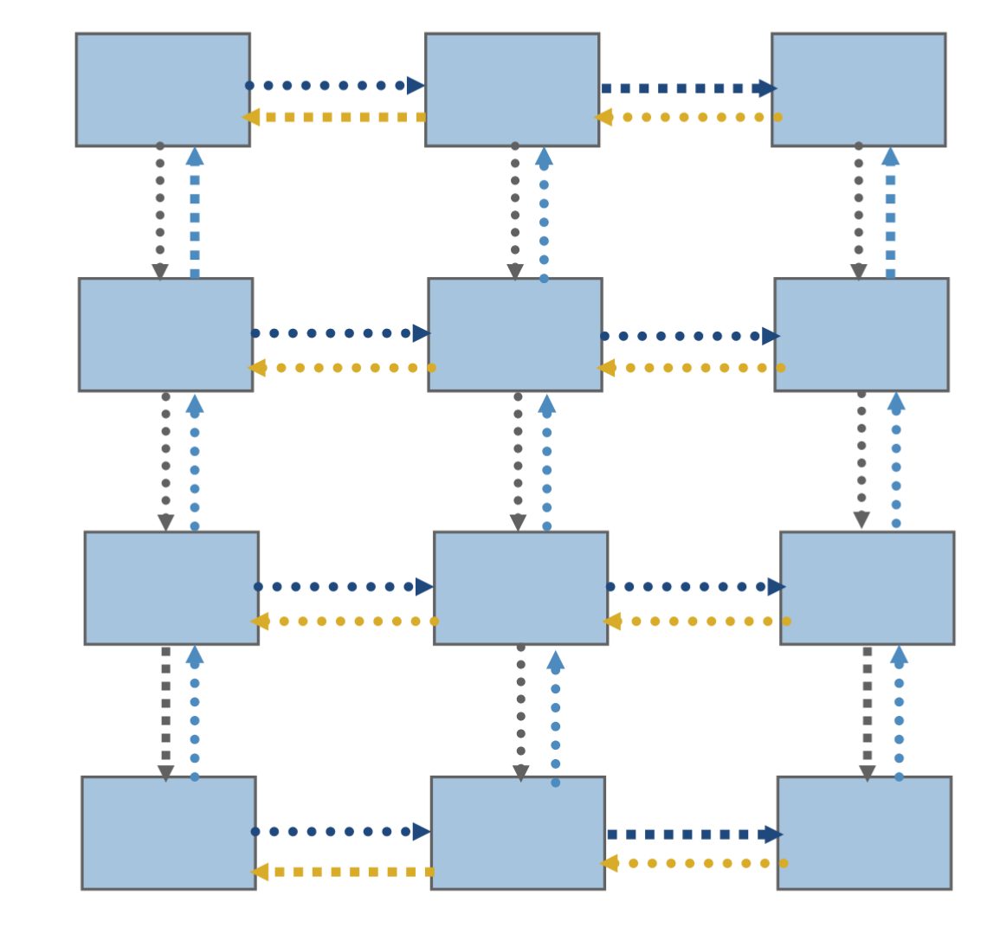

20261020 MPI Intro Cont.¶
How to libraries implement collectives¶
Reduce¶
Simplest way to implement the all reduce is simple series iteration:

Requires a communication for every rank.
Alternatively, do a binary-tree-esque recursion:

Requires \(\log_2(N)\) communications (\(N\) is number of ranks)
Can you think of situations where the binary tree-recursion may not be the most efficient?
If all communication costs are equivalent, then it most likely is the most efficient
If all communication costs aren’t the same, then we can group some sub-reductions together using the “fast” networks to minimize the number of messages needed on the “slow” networks
Perform subreductions intra-node before communicating inter-node
Scan¶
Scan is a cumulative reduction operation (e.g. cumulative sum)
If each rank has
5, 0, 2, 4, then the result of scan is[5, 5, 7, 11]
Quite useful for minimizing communication of distributed IDs
Example: Often we have certain objects distributed across ranks which have a unique ID assigned to them (e.g. mesh cells, vector elements, etc)
It is desireable for every rank to know who owns what object. The easist way to do this is for each rank to own a contiguous range of IDs (rank 0 owns [0,10), rank 1 owns [10,23), etc)
MPI_Scan()is a useful tool to build these contiguous ranges without any single rank having to know all of the possible unique IDsEach rank reports to
MPI_Scan()how many objects they own the scan, then the scan itself computes the bounds of the contiguous array.
Recursive implementation of scan:

Collective communication graph figures courtesy Abtin Rahimian’s course notes
Communicators¶
MPI_COMM_WORLDcontains all ranks in thempiexec. Those ranks may be on different nodes, even in different parts of the world (technically).MPI_COMM_SELFcontains only one rank (the current rank)
Can create new communicators from existing ones
int MPI_Comm_dup(MPI_Comm comm, MPI_Comm *newcomm);
int MPI_Comm_split(MPI_Comm comm, int color, int key, MPI_Comm *newcomm);
int MPI_Comm_create(MPI_Comm comm, MPI_Group group, MPI_Comm *newcomm);

From ATPESC Slides by Bill Gropp
Each process gets a unique rank ID for each communicator it is in
Sub_communicators particularly useful for collectives
Can spawn new processes (but not supported on all machines)
int MPI_Comm_spawn(const char *command, char *argv[], int maxprocs,
MPI_Info info, int root, MPI_Comm comm,
MPI_Comm *intercomm, int array_of_errcodes[]);
Can attach attributes to communicators (useful for library composition)
Blocking and Non-blocking Calls¶
When calling an MPI communciation function, function returns only once the operation is done
For
MPI_SendandMPI_Recv, they are done when the communication is completeTherefore both ranks are synchronized
For collectives (e.g.
MPI_Reduce()), they exit once their “job” in the operation is done.For
MPI_Reduce(), the ranks sending data finish as soon as their data is sent (asynchronous)The rank recieving data waits until it’s recieved it’s data and finished
This can be slow in some cases, where you want to do multiple independent Sends and Recieves
Blocking calls can also cause deadlock bugs if not used carefully
MPI offers non-blocking calls (prefixed with “I” for “immediate”)
e.g.
MPI_Isend()andMPI_Irecv().The immediate variants return an
MPI_Request, which must be waited on to complete the send or receive.Somewhat similar to
async/awaittype programming
MPI_Request *requests = calloc(num_ranks * 3, sizeof(MPI_Request));
int n_requests = 0;
for (int dest_rank = 1; dest_rank < num_ranks; dest_rank++) {
[...]
MPI_Isend(&chunksize, ..., &requests[n_requests++]);
MPI_Isend(&a[dest_rank], ..., &requests[n_requests++]);
MPI_Isend(&b[dest_rank], ..., &requests[n_requests++]);
}
MPI_Waitall(num_ranks * 3, requests, MPI_STATUSES_IGNORE);

Neighbors¶
A common pattern involves communicating with neighbors, often many times in sequence (such as each iteration or time step).

This can be achieved with
Point-to-point:
MPI_Isend,MPI_Irecv,MPI_WaitallPersistent:
MPI_Send_init(once),MPI_Startall,MPI_Waitall.These are more efficient by keeping the information about the communication pattern stored, so it’s not needed to process anymore
Possible it also allows for more efficient system buffer allocation too
Neighborhood collectives (need to create special communicator)
Effectively inform MPI ahead of time the exact communication graph
One-sided (need to manage safety yourself)
Point-to-point messaging is like the assembly of parallel computing
It can be good for building libraries, but it’s a headache to use directly for most purposes
Better to use collectives when possible, or higher level libraries (e.g.
PetscSF, my personal favorite)Some high level libraries (such as
PetscSF) allow you to describe the communication generically and then implement it in any of the above waysSome MPI libraries and HPC systems work better with some versions of communication than others; it just depends
Flexibility is key to optimize the performance
Advice from Bill Gropp (father of MPI)¶
You want to think about how you decompose your data structures, how you think about them globally. […] If you were building a house, you’d start with a set of blueprints that give you a picture of what the whole house looks like. You wouldn’t start with a bunch of tiles and say. “Well I’ll put this tile down on the ground, and then I’ll find a tile to go next to it.” But all too many people try to build their parallel programs by creating the smallest possible tiles and then trying to have the structure of their code emerge from the chaos of all these little pieces. You have to have an organizing principle if you’re going to survive making your code parallel. – https://www.rce-cast.com/Podcast/rce-28-mpich2.html
Distributed-memory parallelism lives and dies by how you distribute the memory (duh)
Often needs to be done at an architectural level
Can’t really start piece-by-piece
Difficult to take a shared memory code and make an optimal MPI/distributed memory program without significant modifications